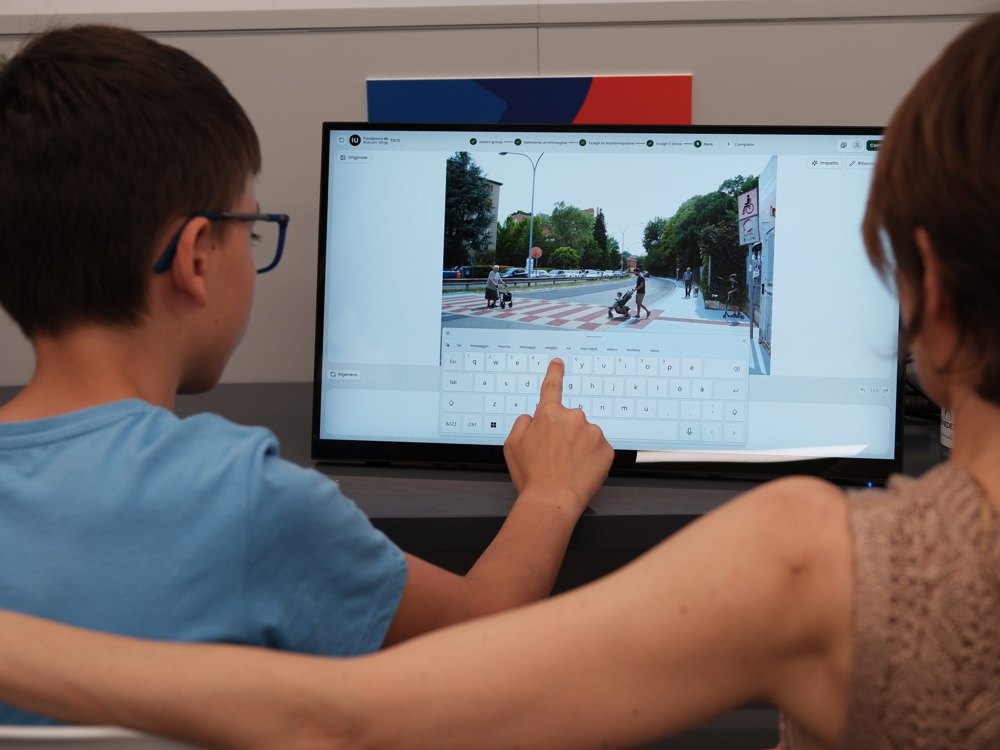
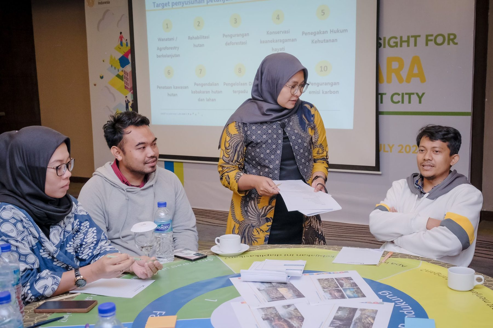
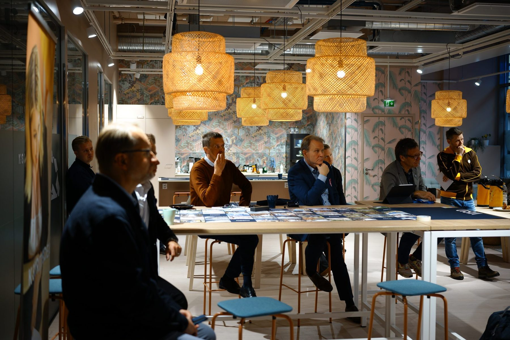
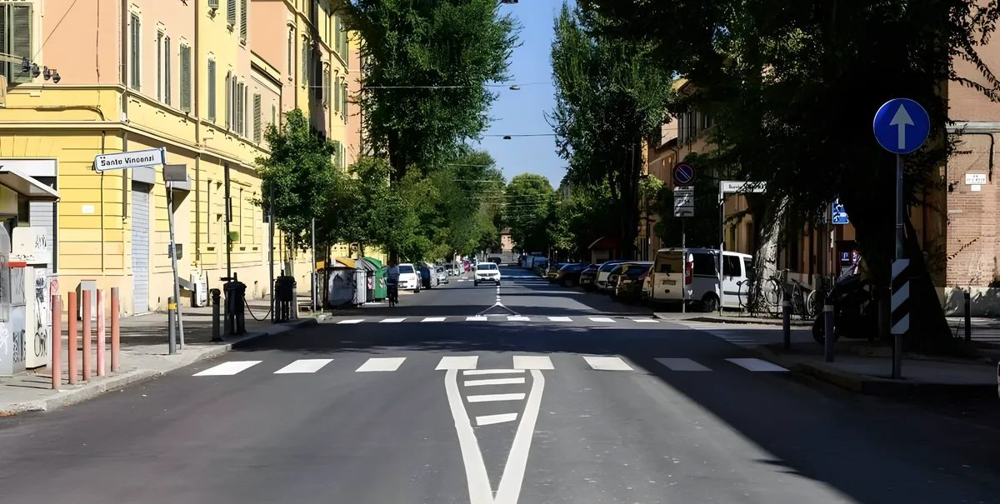
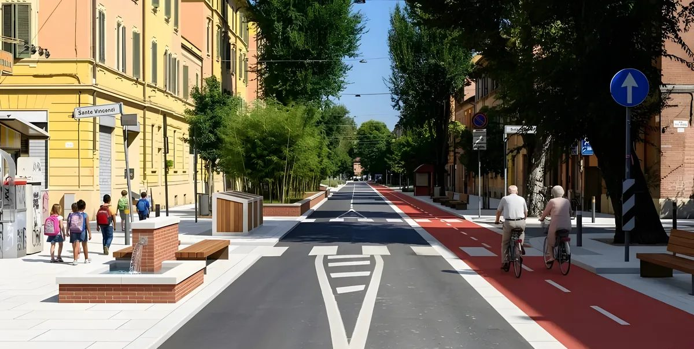
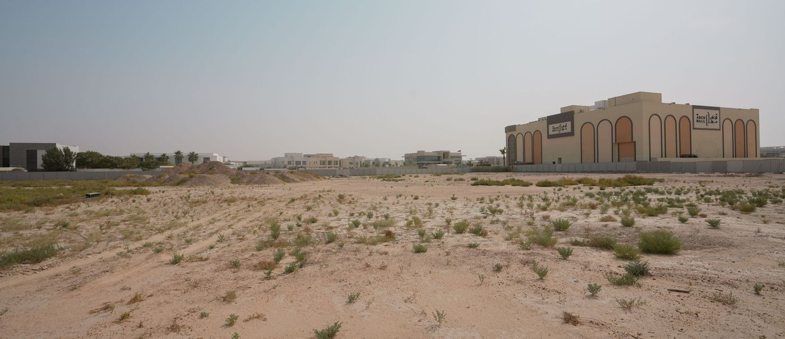
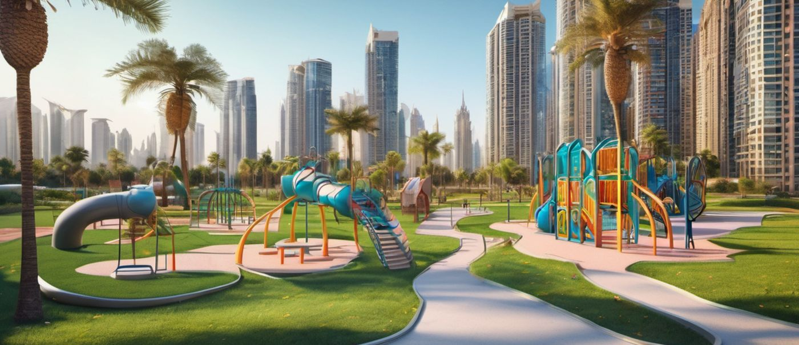
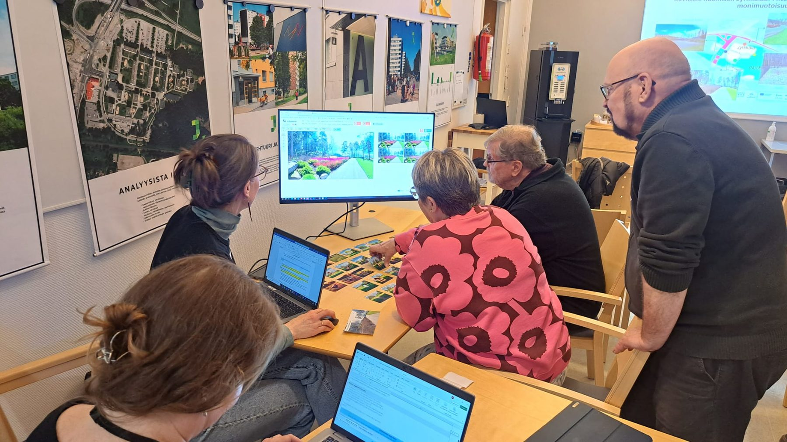

Mission
Build the mandate to mediate urban change.
Cities are changing their streets, squares and neighbourhoods to meet climate, housing and mobility goals. An institution decides each change, and people live with it. We help institutions build the mandate to work out that change in public: to put real options to the people affected, show what each would do, and decide with them while the choice is still open.
95 engagements73 cities38 countriessince 2021
The Paris Agreement, the European Green Deal and the EU Mission on Adaptation all ask for change, and cities deliver much of it. Many more cities and countries have committed to it than ten years ago.
Delivering change takes plans, permits and schedules. Mediating it takes two more things: a process in which the people who will live with a decision can try the options and see what each would do, and an institution with the standing to act on what they choose. That standing is the mandate. The mandate to deliver change keeps growing; the mandate to imagine it has to grow with it.
20 → 32
countries with a national adaptation strategy, 2013 to 2023
4,500+
signatories to the Covenant of Mayors, up from a few hundred
Source: European Environment Agency, Urban adaptation in Europe: what works? (EEA Report 14/2023)
01 Changing your choice
Democracy is not only about choice, but about being able to change your choice.
A vote records a choice at one moment. Planning can offer more: the chance to try an idea on the real place, see what it would do, compare it with the alternatives and choose again.
An idea drawn into a photograph of your own street often changes before anyone votes on it: the render rewrites the wish. A changed mind at that point is the process doing its work.
So we turn a plan into options that people can compare, contest and rate, and every option is evaluated before anyone is asked to choose. Good deliberation gives people the power of understanding, not only the power of choice.
«Perché una città è democratica quando mette in comune la conoscenza.»
Because a city is democratic when it holds knowledge in common.
City of Bologna, TICO page

TICO, Bologna (opens the project page in a new tab)
What an informed choice takes
- 01
Try an idea
Drawn into a photograph of the real place, in the words of the person who had it.
- 02
See its impact
Checked against the institution’s own rules, and for what it would do to the place and the people in it.
- 03
Decide
With the options and what each would do side by side.
- 04
Change your choice
After seeing more, or hearing the person next to you.
and back to the first step, as often as it takes
02 The medium
Bridging the medium imbalance.
In planning, the drawing has long been the medium that produces decisions, and planners held it. Residents held the comment box. Whoever holds the decision-grade medium decides; everyone else annotates.
Generative images give everyone the same medium. Anyone at the table can test an idea in images, without first learning to read a plan or to use design software. The loop below is all a participant needs to learn.

Nusantara (opens the project page in a new tab)
- Step 1
Start from a photo
- Step 2
Propose in plain words
- Step 3
See it, in seconds
- Step 4
Debate and compare
- Step 5
Rate and converge
One full loop takes about half a day, in the room or online. Each session is drawn from a library of sixteen workshop formats. Ways to work together
Who else can take part
-
Children · 6 to 14
From Playgrounds to Planning
With a research grant from the Architects’ Council of Europe, we built a version of the process fitted to how children think about space: drawing-guided for the youngest, tablets for the oldest. It was piloted with a school class in Finland and at a museum in Milan in 2023. The project (opens in a new tab)
-
In the street
Kiezlabor, Berlin
CityLAB Berlin ran the Kiezlabor, a mobile pavilion touring Berlin’s neighbourhoods, for three summers (2023–2025). Passers-by, many of them children, tried changes to their own streets. CityLAB gave the tool its own names: Kiezvisionen, then Stadtvisionen. The project (opens in a new tab)
-
More than human
BiodiverseCity?, Tallinn
At the Estonian Museum of Natural History (2023), visitors reimagined communal areas as wilder, more biodiverse habitats. The project (opens in a new tab)
03 Collaboration
From participation to collaboration.
Participatory planning invites stakeholders to react to a proposal someone else has framed. Collaborative planning has the parties to a decision author it together. We want to move away from inviting stakeholders to participate, toward having them coplan.
Stakeholders are more than residents. They include the planning office, the other departments of the same city, and the private sector: businesses, developers and the design offices that draw the result. The platform is also used inside institutions, so that departments work from the same images and the same evidence before a plan goes public.
At the table
- Residents
- Visitors
- Local businesses
- The planning office
- Other city departments
- Developers
- Design offices
- Researchers
Tinted: inside the institution.

Re-Centre Jyväskylä (opens the project page in a new tab)
Who holds what
Stakeholders
hold the agency
Residents, businesses and visitors: the people who live with the outcome. They bring lived expertise, what they value and what a place is actually for.
Institutions
hold the mandate
City offices, planners and funders: the bodies that must decide and deliver. They hold the mandate and set the guardrails every option has to respect.
Foresight
with AI
AI turns people’s own words into scenarios of the real place and evaluates each against the institution’s policy, design guides and law, and for likely environmental and social impact. Scenarios, not forecasts: it shows what could happen; people decide what should.
Where they overlap
Public interest & governance
Where lived experience meets the legal mandate: the public enters while the options are still open, not after the plan is fixed, and what it wants is made accountable to those who must govern it.
Seeing before choosing
A resident describes a change to one photograph, sees the scenario and what it would do, and keeps it or changes their mind. We do not know what we want until we see it.
Checking before committing
Every scenario is evaluated against the institution’s own policy, design guides and law as it is made, so conflicts surface while a change is still easy, long before anything is committed.
Where all three meet
Coplanning
One process rather than three: the institution holds the mandate and the guardrails, people bring what they know and value, and foresight turns both into scenarios everyone can see, weigh and agree on.
Top-down and bottom-up, both struck through.
Collaborative urban planning bridges the dichotomy: top-down and bottom-up work together.
From below, the experts of everyday life propose and evaluate. From above, the institution sets the guardrails and takes the decision. In between, designers turn wishes and needs into design, and keep their creative freedom. Every step that makes something visible is followed by one where people weigh it: propose, then judge; render, then decide.
04 The framework
Two questions, four tasks.
Open brief or defined brief
Could this engagement still change what will be done, or only how?
Respond or propose
Will people bring material you do not have yet, or respond to material you provide?
- Open brief, respond:
Scenario planning
What if this happened here?
- Open brief, propose:
Futuring
What could this place become?
- Defined brief, respond:
Design review
What would make this better?
- Defined brief, propose:
Co-design
How should it look and work?
05 Building the mandate
Sometimes the mandate exists in pieces. Sometimes it has to be built.
The mandate decides what the imagining can become, so we look for it before anything else.
Assembled
Bologna · Vienna
The rules a city already has are put together. In Bologna, they were EU nature-based-solutions policy and the city’s design guide; in Vienna, the Supergrätzl standard (opens the Vienna project page in a new tab). The platform holds such rules as lenses and evaluates every scenario against them as it is made, while an image is still easy to change.

As photographed
ReworkedBuilt
Singapore · Estonia · Dubai
How do you build the mandate from scratch?
Where there is nothing to assemble, the mandate has to be built before anyone is invited to imagine: with Singapore’s Urban Redevelopment Authority, with Estonia’s Ministry of Climate, and in Dubai, where it took three years, in five steps.
- 01Exploration
- 02Outreach
- 03A mandate
- 04A pilot
- 05Integration
The mandate came before the pilot, and integration only after both

The plot
The parkThe rule we work by
Build the mandate before the pilot.
06 What stays human
We keep the conversation human.
In 2026, three studies tried to replace a public with synthetic participants simulated by AI. The models made divided groups look uniform. The conversation changed nothing; the model is what matters. Real people started far apart and ended closer together. Only people change their minds for each other.
As presented in the keynote The Mandate to Imagine, Royal Danish Academy, 21 September 2026

Urban Biodiversity Parks, Turku (opens the project page in a new tab)
The work is split three ways, and only one part goes to the machine.
-
The platform
Generates and evaluates
It turns people’s own words into scenarios and evaluates each one. It can stand in for those who are not in the room, such as future residents or the species a plan overlooks, to stress-test a scenario. It never replaces the living public.
-
People
Deliberate
They propose, compare, argue and weigh, and they are free to change their minds on the way.
-
The institution
Decides
It holds the mandate, sets the guardrails every option must respect, and answers for the decision.
07 The research
The research behind the method.
We study our own engagements against the literature on planning, participation and generative AI. The research asks who gains power when AI enters planning, what has to stay with people, and what the AI cannot see.
Further reading
Sampo Ruoppila and Konsta Anastasiou
Ruoppila, S. and Anastasiou, K. (2026) ‘Participating with AI: how generative visualisations are changing participatory planning’, Urban Research & Practice, 1–27. Open access, published online 16 September 2026. doi.org/10.1080/17535069.2026.2730986 (opens in a new tab)
Three ideas the method rests on
-
1988
Pelle Ehn
Work-Oriented Design of Computer Artifacts, and the UTOPIA and DEMOS projects: tacit skill cannot be gathered by asking for requirements, only exercised.
-
1970
Giancarlo De Carlo
Architecture has a client who commissions it and a public who lives with the result.
-
1962
Bachrach and Baratz
The second face of power is deciding what is decidable.
Three questions from our research
- 01
Does AI shift power, or re-tool the organisers? Mostly it re-tools the organisers: synthesis and framing move into the model, and so to whoever configures it. In the Helsinki market squares engagement, about 3,385 generated images were cut to about 80 for residents to vote on. Power moved to residents only where something was handed over outside the tool.
- 02
What is the most important role of humans? The sorting can be shared with a machine: a UK government consultation tool matched expert reviewers about as closely as two reviewers match each other. What is left for people is deciding what counts, answering for it under a name, and changing our minds together.
- 03
What can AI discover, and what can it not see? It can surface a preference people did not know they held. It also pulls preferences toward what it draws well: in Turku, people dropped standing deadwood because the model could not render it. The model’s defaults have a geography.
Reading that shaped the method
- 1962Bachrach & BaratzTwo faces of power
- 1964KoestlerThe Act of Creation
- 1969ArnsteinA ladder of citizen participation
- 1970De CarloArchitecture’s public
- 1988EhnWork-Oriented Design of Computer Artifacts
- 1990OstromGoverning the Commons
- 1997HealeyCollaborative Planning
- 1997LévyCollective Intelligence
- 2010Innes & BooherPlanning with Complexity
- 2013McCulloughAmbient Commons
- 2017MulganBig Mind
- 2018SennettBuilding and Dwelling
- 2019RushkoffTeam Human
Built and run in Helsinki by SPIN Unit Lab Oy since 2018.
About: company, ethics and data